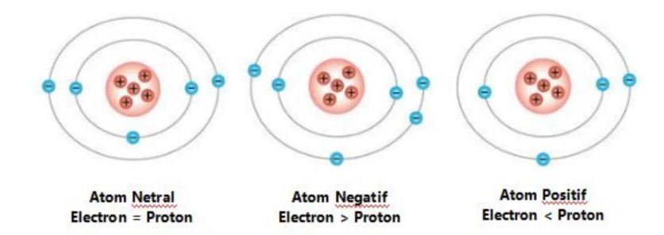
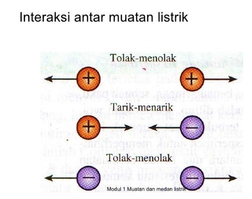
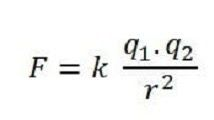

Silahkan Login !!

Pengertian Muatan Listrik
Muatan listrik adalah sifat dasar yang dimiliki oleh partikel penyusun atom, yang memungkinkan partikel tersebut berinteraksi melalui gaya listrik. Muatan listrik dapat dibedakan menjadi tiga jenis:
- Muatan Positif: Dimiliki oleh proton.
- Muatan Negatif: Dimiliki oleh elektron.
- Muatan Netral: Terjadi ketika jumlah muatan positif dan negatif dalam suatu objek sama, sehingga total muatannya nol.

Karakteristik Muatan Listrik
Kuantisasi Muatan: Muatan dasar memiliki nilai tetap sebesar 1,602 x 10^-19 Coulomb. Muatan benda adalah kelipatan dari nilai ini.
Interaksi Muatan Listrik
Pada muatan listrik bisa saling berinteraksi sebab antara ke-2 muatan terjadi gaya listrik (gaya tolak/ gaya tarik).
Penerapan Konsep
Induksi listrik: Induksi listrik merupakan pemisahan muatan pada benda netral akibat mendekatkan benda bermuatan positif maupun benda bermuatan negatif. Pemisahan muatan dapat terjadi karena adanya gaya tarik atau gaya tolak muatan listrik. Induksi listrik digunakan untuk membuat benda netral menjadi bermuatan listrik. Gaya tarik akan terjadi pada benda bermuatan negatif yang didekatkan pada benda netral sehingga muatan positif pada benda netral bergeser ke sisi lain dari benda netral dan muatan negatif dari bertambah ke sisi yang lain. Benda menjadi bermuatan positif jika muatan negatif dihubungkan dengan permukaan tanah kemudian diputus.
Medan Listrik: Muatan listrik mampu menghasilkan medan listrik. Pembuatan medan listrik dapat dilakukan oleh elektron, ion, atau proton di dalam ruangan yang ada di sekitarnya. Satuan medan listrik dinyatakan dalam Newton/Coulomb atau disingkat N/C.
Penerapan Praktis
Xerografi: Proses pencetakan dan fotokopi yang menggunakan muatan listrik untuk menarik dan menempelkan tinta ke kertas.
Elektroplating: Proses pelapisan logam menggunakan arus listrik untuk mengendapkan lapisan logam pada permukaan benda.
NOTE : Untuk Penjelasan lebih lenkap kalian bisa klik logo di bawah
Sejarah Hukum Coulomb
Hukum Coulomb: Hukum Coulomb, yang ditemukan oleh fisikawan Prancis Charles-Augustin de Coulomb pada 1785, menyatakan bahwa gaya elektrostatis antara dua muatan listrik berbanding terbalik dengan kuadrat jarak antara mereka. Penelitian Coulomb menggunakan torsion balance membantu memahami interaksi muatan listrik dan menjadi dasar teori elektromagnetik Maxwell. Penemuan ini penting untuk studi elektrostatika dan aplikasinya dalam teknologi modern.
Bunyi Hukum Coulomb: Hukum Coulomb adalah hukum yang menjelaskan tentang gaya interaksi antara muatan listrik berbanding terbalik dengan kuadrat jarak. Muatan listrik diberi simbol Q, sementara satuannya adalah Coulomb (C).
Hukum Coulomb berbunyi: "Besaran gaya tarik menarik dan tolak menolak sebanding dengan besar muatan masing-masing dan berbanding terbalik dengan kuadrat jarak kedua muatan."
Rumus Hukum Coulomb
Menurut Hukum Coulomb, gaya elektrostatis antara dua muatan listrik dapat dihitung menggunakan rumus:
F = k * (q1 * q2) / r2
Dalam rumus ini:
NOTE : Untuk Penjelasan lebih lenkap kalian bisa klik logo di bawah
Note : Jika sudah next tidak bisa kembali sebelum anda mengerjakan semua quiznya